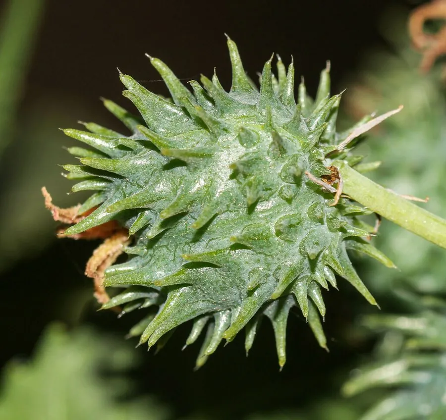

农作物与经济植物 · 植物界
蓖麻 Ricinus communis

蓖麻的种子富含蓖麻油，是重要的工业油料，可用于航空、机械和医药，但种子含蓖麻毒素，严禁食用。
- 分类
- 门被子植物门纲双子叶植物纲目金虎尾目科大戟科属蓖麻属
- 栖息环境
- 热带与亚热带的荒地、田边与山坡，耐旱耐瘠薄，适应性强
- 地理分布
- 原产非洲东北部与中东，现广泛栽培于热带、亚热带地区
- 保护级别
- 暂无评估（栽培作物）
物种志
蓖麻是大戟科一年生或多年生草本或小乔木，热带可长成 5 m 高的小树。叶片大，掌状深裂，裂片 7–11 枚，边缘有锯齿，叶柄长，盾状着生。花单性同株，圆锥花序，上部为雌花、下部为雄花。蒴果球形，表面有软刺，成熟时开裂，内含 3 粒种子，种子椭圆形、有花纹。
蓖麻原产非洲东北部与中东一带，栽培历史数千年，如今在热带、亚热带广泛种植。它适应性强，耐旱、耐瘠薄，对土壤要求不严。蓖麻种子含油约 50%，蓖麻油黏度高、耐高温，是优良的工业润滑油，可用于航空发动机、机械与橡胶工业，也可用于医药和化妆品。蓖麻种子含有蓖麻毒素，毒性极强，误食会危及生命，必须严防误食，榨油后的饼粕需脱毒处理才能作饲料或肥料。
形态与习性
- 株高热带可长成 5 m 高的小树
- 叶掌状深裂，裂片 7–11 枚
- 蒴果球形，表面有软刺
- 种子含油约 50%
- 用途航空与机械工业润滑油
- 毒性种子含蓖麻毒素，严禁食用
趣味知识
- 蓖麻种子含油约 50%，蓖麻油是航空和机械工业的优质润滑油。
- 蓖麻种子含剧毒的蓖麻毒素，误食几粒就可能危及生命。
- 蓖麻在热带能长成小树，叶片宽大如掌，很有辨识度。